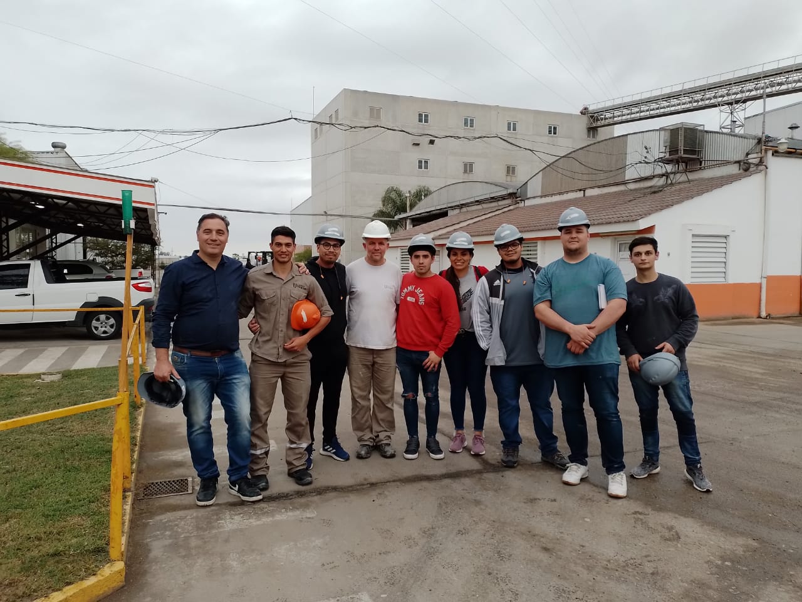

Tecnicatura Superior
En Molienda de Cereales y Oleaginosas
Podes trabajar en el mundo, la única tecnicatura superior en latinoamérica.

Visitas
Los alumnos junto a sus docentes realizan visitas a diversas industrias.

Prácticas es molino escuela
La institución posee un molino escuela para las prácticas de sus alumnos
Referente de la Tecnicatura
Enzo Varela